How to install Screen Translator, step by stepCómo instalar Traductor de pantalla, paso a paso
About 10 minutes. First you switch off two phone locks for a moment, then you install the app, and at the end you switch the locks back on.Unos 10 minutos. Primero apagas un momento dos candados del teléfono, luego instalas la app y al final vuelves a encender los candados.
Part 1 · Turn off Samsung’s lock (Auto Blocker)Parte 1 · Apaga el candado de Samsung (Bloqueador automático)
Only on Samsung phones. If your phone is not a Samsung, go to Part 2.Solo en teléfonos Samsung. Si tu teléfono no es Samsung, pasa a la Parte 2.
Open Settings and tap “Security and privacy”Abre Ajustes y toca “Seguridad y privacidad”
Settings is the gear icon in your app list. Your icons may have other colors.Ajustes es el ícono del engrane en tu lista de apps. Tus íconos pueden tener otros colores.
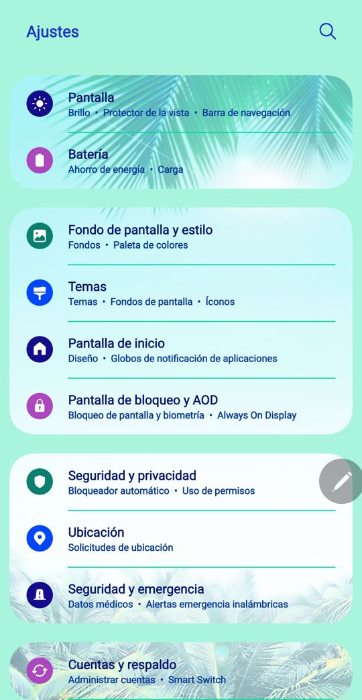
Tap “Auto Blocker”Toca “Bloqueador automático”
It is lower on the screen, under “Additional security settings”. Scroll down if you don’t see it.Está más abajo, en “Ajustes de seguridad adicionales”. Desliza hacia abajo si no lo ves.
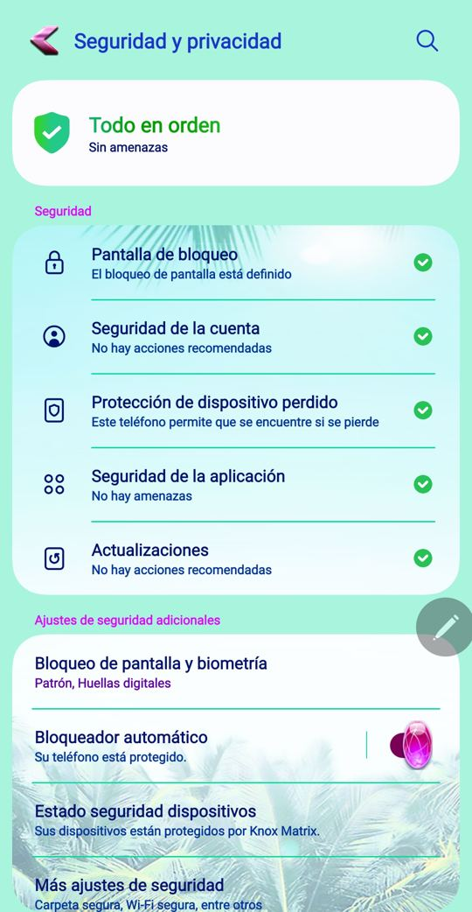
Tap the switch to turn it offToca el interruptor para apagarlo
It must say “Off”. Confirm if it asks.Debe quedar en “Desactivado”. Confirma si te lo pide.

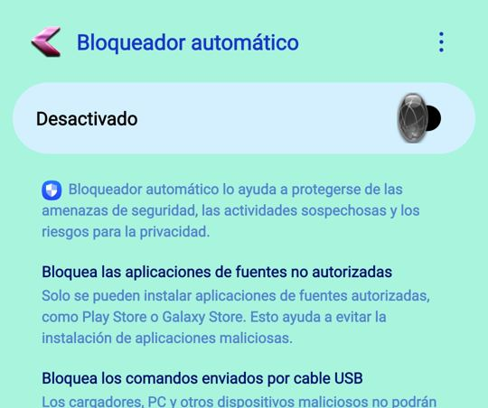
Part 2 · Pause Google’s lock (Play Protect)Parte 2 · Pausa el candado de Google (Play Protect)
If you skip this, Google blocks the app and only shows an “Got it” button.Si te saltas esta parte, Google bloquea la app y solo te muestra el botón “Entendido”.
Open Play Store and tap your photo or initial, top rightAbre Play Store y toca tu foto o tu inicial, arriba a la derecha
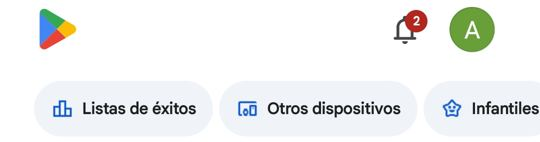
Tap “Play Protect”Toca “Play Protect”
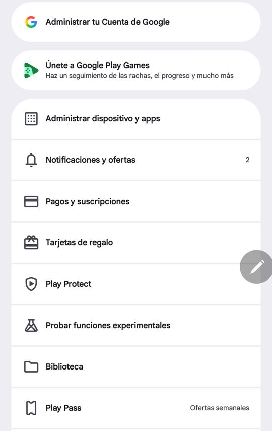
Tap the gear at the top rightToca el engrane arriba a la derecha
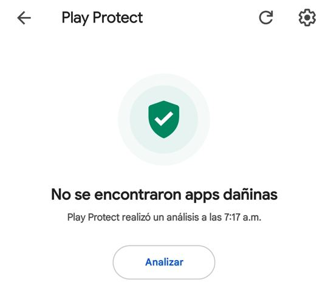
Tap the switch “Scan apps with Play Protect”Toca el interruptor “Analizar las apps con Play Protect”
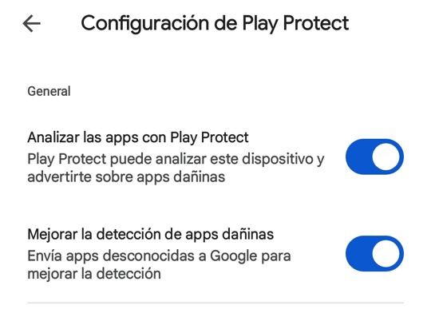
Tap “Pause”Toca “Pausar”
Choose “Pause”, not “Turn off”: Google turns it back on by itself the next day.Elige “Pausar”, no “Desactivar”: Google lo vuelve a encender solo al día siguiente.
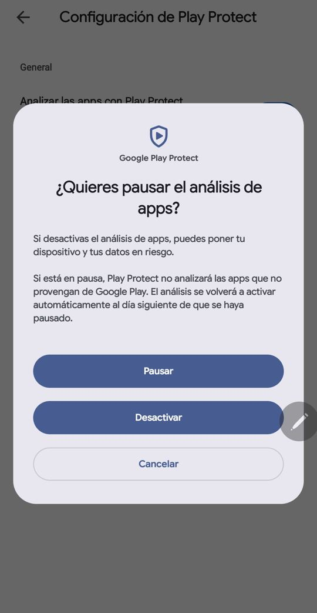
Play Protect will turn back on the next day.
Part 3 · Download and installParte 3 · Descarga e instala
Tap this yellow buttonToca este botón amarillo
You are already in the right place. The download starts right here.Ya estás en el lugar correcto. La descarga empieza aquí mismo.
If Chrome warns you, tap “Download anyway”Si Chrome te avisa, toca “Descargar de todos modos”
It appears with every app that is not in the Play Store. Wait for the download to finish (130 MB).Aparece con toda app que no está en Play Store. Espera a que termine la descarga (130 MB).
Download “traductor-pantalla.apk” anyway?¿Quieres descargar “traductor-pantalla.apk” de todos modos?
When it finishes, tap “Open” in the notice at the topCuando termine, toca “Abrir” en el aviso de arriba
If the notice already disappeared: in Chrome tap the 3 dots → Downloads → tap traductor-pantalla.apk.Si el aviso ya se quitó: en Chrome toca los 3 puntos → Descargas → toca traductor-pantalla.apk.
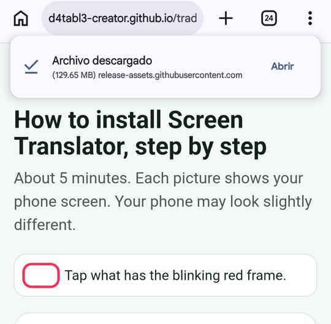
Tap “Install”Toca “Instalar”
If it asks to allow installing from this source: tap Settings, turn it on and go back.Si te pide permitir instalar desde esta fuente: toca Ajustes, enciéndelo y regresa.
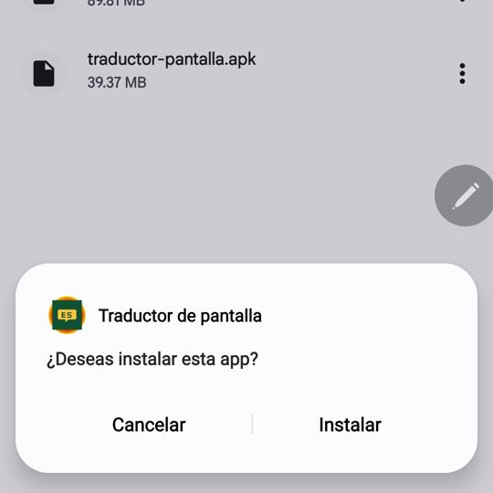
Do you want to install this app?
If it asks “Turn on Play Protect?”, tap “Decline”Si pregunta “¿Quieres activar Play Protect?”, toca “Rechazar”
You turn it back on at the end, in Part 5.Lo vuelves a encender al final, en la Parte 5.
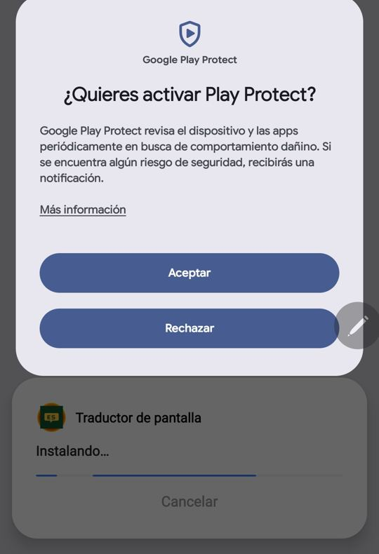
Play Protect regularly checks your apps…
Open the app and wait for “Languages ready”Abre la app y espera a que diga “Idiomas listos”
Keep internet on. It downloads the languages only this first time.Ten internet encendido. Descarga los idiomas solo esta primera vez.
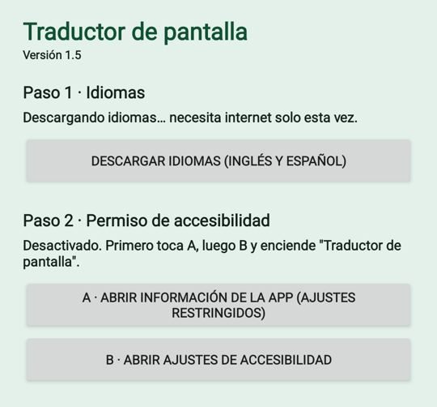
Part 4 · Give the app its permissionParte 4 · Dale permiso a la app
Inside the app you will use buttons A and B.Dentro de la app vas a usar los botones A y B.
Tap B → “Installed apps” → “Screen Translator”Toca B → “Aplicaciones instaladas” → “Traductor de pantalla”
A message “Restricted setting” appears. Tap OK. It is normal and needed.Sale el aviso “Ajuste restringido”. Toca Aceptar. Es normal y necesario.
For your security, this setting is currently unavailable.Por tu seguridad, este ajuste no está disponible por ahora.
Go back to the app, tap A → the 3 dots → “Allow restricted settings”Regresa a la app, toca A → los 3 puntos → “Permitir ajustes restringidos”
The 3 dots are at the top right. Confirm with your fingerprint or PIN.Los 3 puntos están arriba a la derecha. Confirma con tu huella o PIN.
Tap B again → “Installed apps” → “Screen Translator” → turn it on → “Allow”Toca B otra vez → “Aplicaciones instaladas” → “Traductor de pantalla” → enciéndelo → “Permitir”
The switch turns blue.El interruptor se pone azul.
It reads the screen only when you tap its button. Nothing is sent anywhere.Lee la pantalla solo cuando tocas su botón. Nada se envía a ningún lado.
Done! The round yellow button appears¡Listo! Aparece el botón redondo amarillo
Tap it on any app and choose “Translate screen”. You can drag it anywhere.Tócalo en cualquier app y elige “Traducir pantalla”. Lo puedes arrastrar a donde quieras.
Part 5 · Turn the locks back onParte 5 · Vuelve a encender los candados
The app keeps working with both locks on.La app sigue funcionando con los dos candados encendidos.
Samsung: Settings → Security and privacy → Auto Blocker → turn it onSamsung: Ajustes → Seguridad y privacidad → Bloqueador automático → enciéndelo
It must say “On”.Debe quedar en “Activado”.
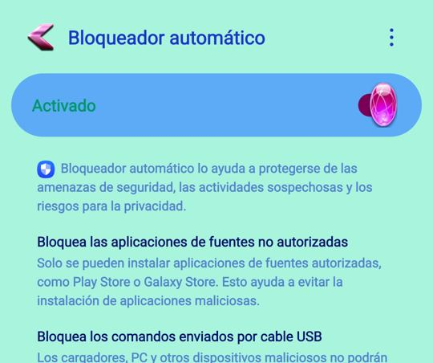
Play Store → your photo → Play Protect → “Turn on”Play Store → tu foto → Play Protect → “Activar”
If you chose “Pause”, it also turns on by itself tomorrow.Si elegiste “Pausar”, también se enciende solo mañana.
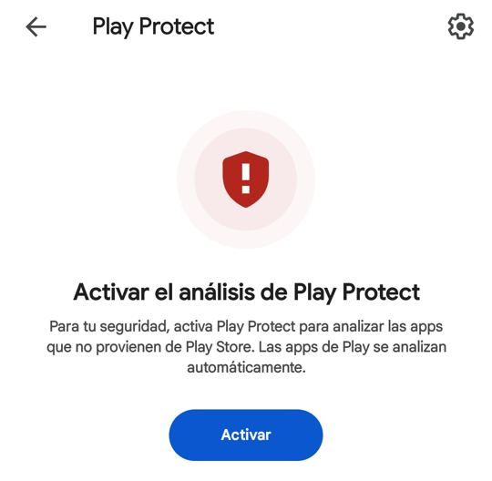
If you see one of these screensSi te sale una de estas pantallas
It means a lock is still on. Close it and do the part shown below each picture, then try installing again.Significa que un candado sigue encendido. Ciérrala, haz la parte que dice debajo de cada imagen y vuelve a instalar.
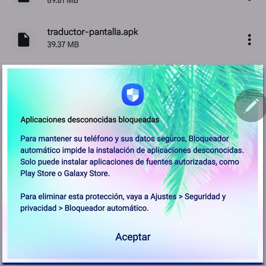
Auto Blocker prevents the installation of unknown apps…
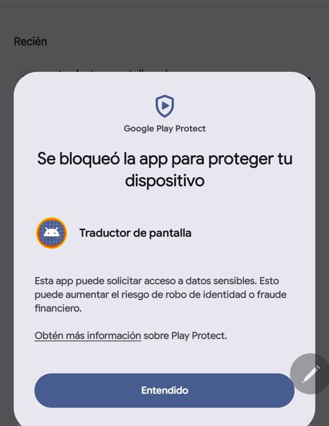
This app can request access to sensitive data…